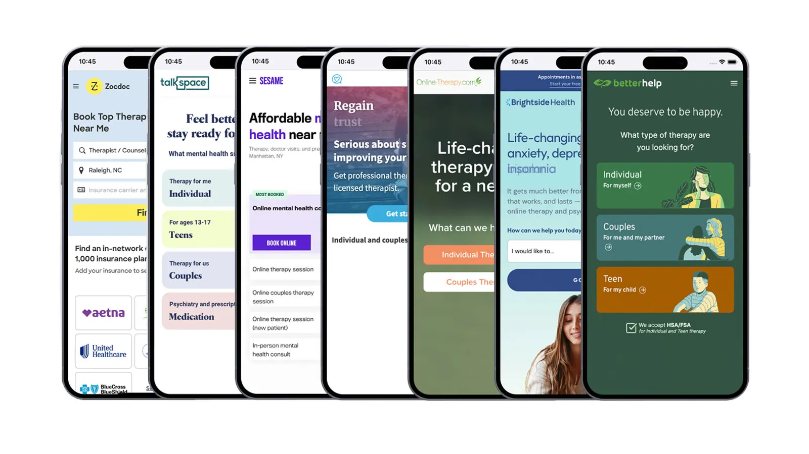
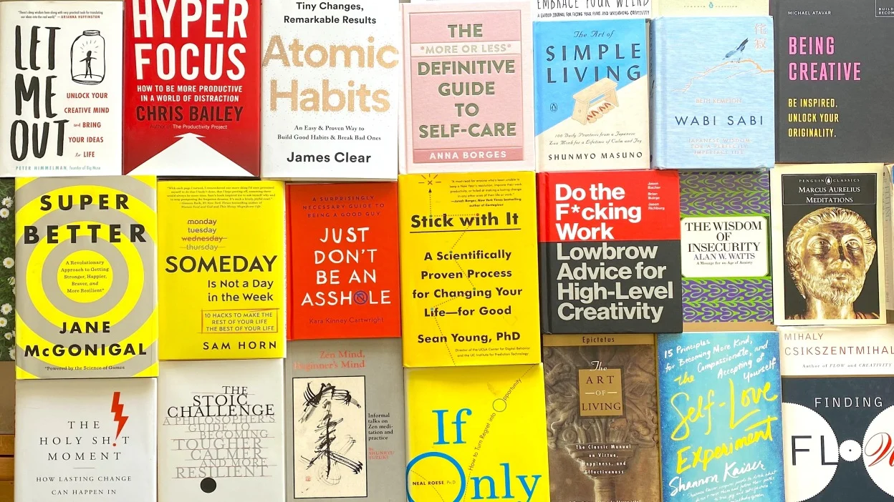
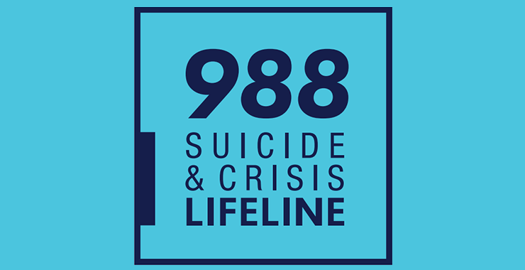

1. Meditation Exercises
Practice mindfulness with guided meditations and breathing exercises to reduce stress and increase focus.
- Box Breathing: Inhale for 4 counts, hold your breath for 4 counts, exhale for 4 counts, and hold again for 4 counts. Repeat for 1–2 minutes to calm your mind.
- 4-7-8 Breathing: Inhale deeply through your nose for 4 counts, hold your breath for 7 counts, and exhale slowly through your mouth for 8 counts. This exercise promotes relaxation and helps manage stress.
- Mindful Breathing: Sit comfortably and focus entirely on your breathing. Notice the sensation of air entering and leaving your nostrils or how your chest rises and falls. Whenever your mind wanders, gently bring your attention back to your breath.

2. Easy Therapy Platforms
Find professional mental health support with these online platforms:
- BetterHelp - Access licensed therapists online.
- Talkspace - Convenient online therapy options.

3. Apps for Wellness
Enhance your mental well-being with these apps:
- Moodpath - Track your emotions and receive feedback.
- Insight Timer - Free meditations and mental health resources.

4. Self-Help Resources
Discover self-help guides and exercises to improve your mental health:
- Self Help Guides - Evidence-based resources for personal growth.
- Psychology Tools - Free worksheets and resources.

5. Crisis Hotlines
The content on this website is for informational purposes only and not a substitute for professional medical advice. Always consult a qualified healthcare provider regarding mental health concerns. If you're in distress, reach out to these hotlines for immediate help:
- National Suicide Prevention Lifeline (US): 988
- Crisis Text Line: Text HOME to 741741